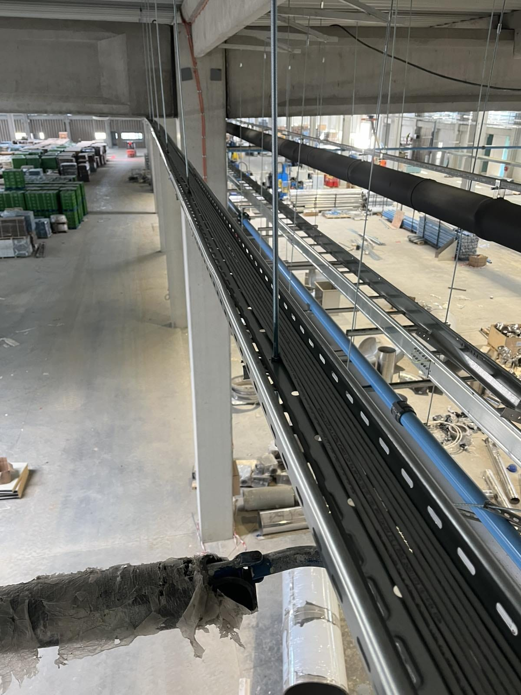
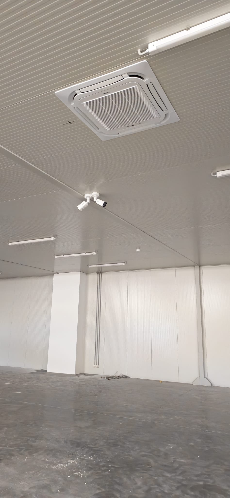

Strukturno kabliranje
Kompletno podatkovno i energetsko kabliranje kroz proizvodne i poslovne prostore objekta.

Kompletna tehnološka infrastruktura za novu fabriku Minth grupe u Šapcu, od strukturnog kabliranja i mreže do video-nadzora, kontrole pristupa i AV opreme za sale za sastanke, isporučena kao jedinstveno integrisano rešenje.

Minth grupa, globalni proizvođač komponenti za automobilsku industriju, otvorila je novu fabriku u Šapcu. Za novi objekat bila je potrebna kompletna tehnološka infrastruktura, od kablovske osnove do sistema u svakodnevnoj upotrebi.
TRS je isporučio sve sisteme kao jedinstveno rešenje: strukturno kabliranje, mrežnu infrastrukturu, video-nadzor, kontrolu pristupa i AV opremu, uz koordinaciju radova na aktivnom gradilištu i isporuku u planiranom roku.
Svi sistemi projektovani su i izvedeni kao jedna celina, sa zajedničkom kablovskom i mrežnom osnovom.
Kompletno podatkovno i energetsko kabliranje kroz proizvodne i poslovne prostore objekta.
Svičevi i Wi-Fi pristupne tačke na Huawei platformi, za pouzdano žično i bežično povezivanje.
Hikvision kamere za potpunu pokrivenost objekta i pripadajuće lokacije.
Upravljanje pristupom vratima i zonama na Hikvision ACS platformi.
Projektori i ekrani za sale za sastanke, spremni za svakodnevnu poslovnu upotrebu.
Svi sistemi objedinjeni u okviru jedne isporuke, sa jednom tačkom odgovornosti za celokupnu tehnologiju objekta.
Kablovska infrastruktura, video-nadzor i mrežni sistemi izvedeni su paralelno sa izgradnjom objekta.



Kompletna tehnološka infrastruktura izvedena je na aktivnom gradilištu i predata u skladu sa planom otvaranja fabrike.
Svi tehnološki sistemi objekta realizovani su kroz jednog izvođača, od kabliranja do AV opreme.
Kabliranje, bezbednosni sistemi, mreža i AV oprema izvedeni su koordinisano, bez međusobnih zastoja i naknadnih prepravki.